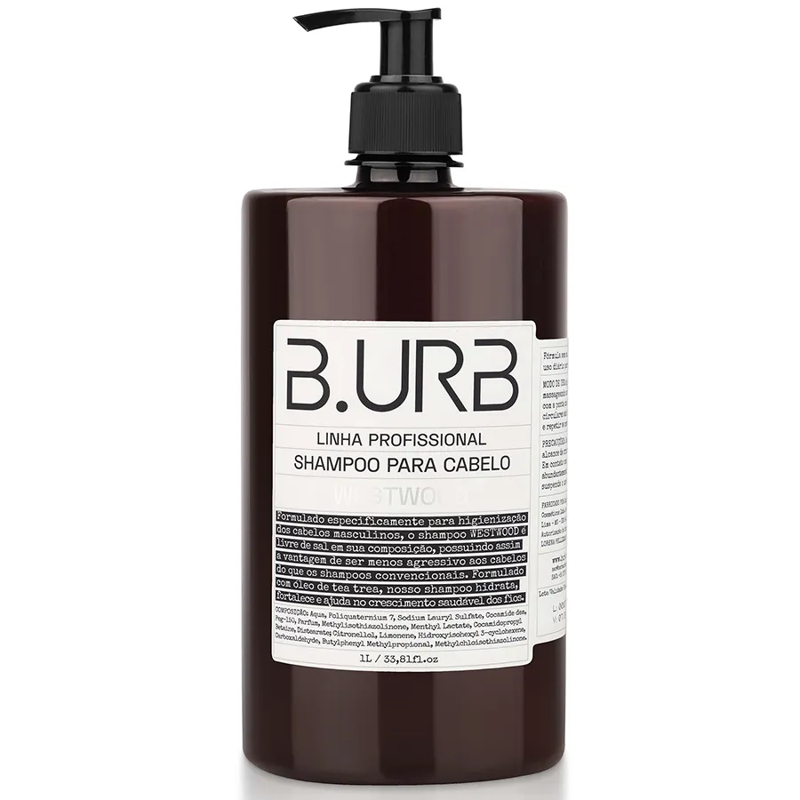
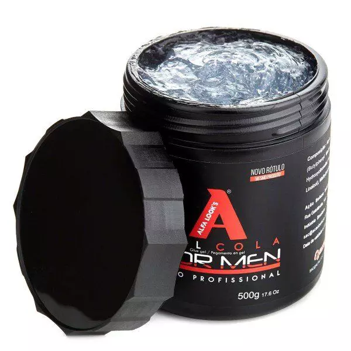

Nossos Produtos

Balm
Hidrata e amacia os pelos da barba, tornando-os mais fáceis de modelar. Também previne coceiras e irritações na pele sob a barba, mantendo a área hidratada.

Shampoo
Limpa o cabelo e a barba, removendo impurezas, oleosidade e resíduos de produtos. Ajuda a manter a saúde do couro cabeludo e a aparência dos fios.

Óleo Capilar
Nutre e hidrata os fios, controlando o frizz e proporcionando brilho. É ideal para manter tanto o cabelo quanto a barba saudáveis e com boa aparência.

Gel
Proporciona fixação para estilos de cabelo e barba. É usado para criar e manter penteados, permitindo diferentes níveis de fixação, desde looks mais naturais até estilos mais definidos.